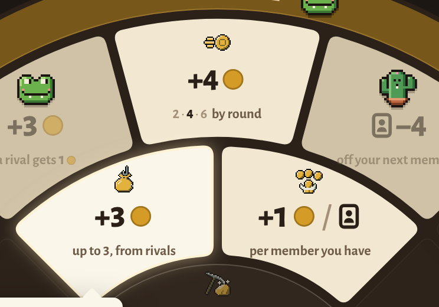
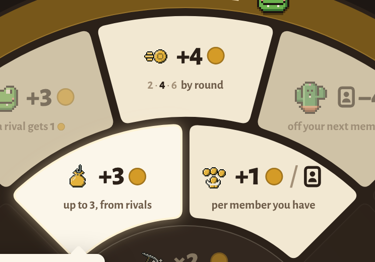

Cults · plate 1b · the action's picture
The same three panels (Golden Years open, Collect Debts lit, Tithe open) in three treatments. Each picture is 24px, drawn at 1× or 2×.

A · Above the number (picked)
The picture takes the name's old slot, and a taken space's minion takes it in turn. The number stays the hero.

B · Left of the number
Compact, but the left of the line is where the grammar puts what you give, so the picture reads like a cost.